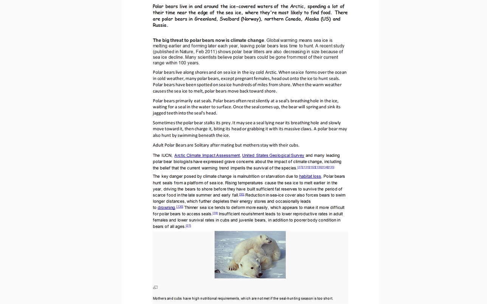

While I was at secondary school, there was a competition based around creating a piece of media that would highlight an endangered species and how to save them. As I really enjoyed creating media using video software, I thought to create a fake news broadcast around Polar Bears and the melting Arctic. To start this process I did a lot of research around the species and the habitat and then I started designing the set. I decided to set it in the BBC news studio.

To create this I needed to use a green screen which I set up at home using some large pieces of green card and with some help, I was then able to transfer the footage onto my computer and edit the background to be the news studio. I then gathered some photos to display on the 'screen' in the studio which I also edited to appear as if they were really there. This was my first go at using more complex software to create something like this and it was the start of my passion for Interactive Media.